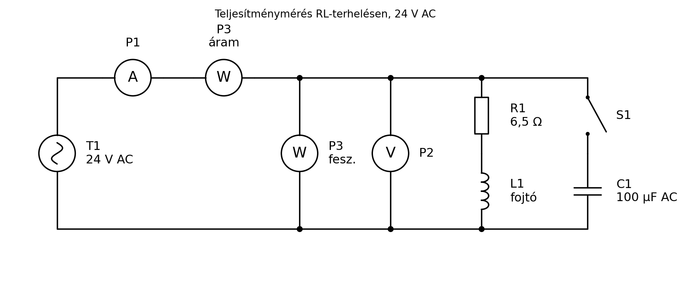

Biztonsági korlát. A tanuló csak a törpefeszültségű
(24 V AC, leválasztó transzformátoros) kört építi; a hálózati rész
mérése jogosult személy feladata. Bekötés és átkötés előtt az öt
szabály: (1) lekapcsolás, (2) visszakapcsolás elleni biztosítás, (3) a
feszültségmentesség ellenőrzése, (4) földelés és rövidre zárás, ha
indokolt, (5) a szomszédos feszültség alatti részek lefedése. A fojtó
áramkörét ne bontsd feszültség alatt: a kikapcsolási túlfeszültség ívet
húz; előbb a forrást kapcsold le.
Elrendezés. T1 biztonsági transzformátor (24 V AC,
legalább 100 VA) → P1 ampermérő → P3 wattmérő (áramtekercs sorosan,
feszültségtekercs párhuzamosan) → soros RL-terhelés: kb. 6,5 Ω-os,
legalább 50 W-os (inkább 100 W-os) teljesítményellenállás és vasmagos
fojtó (a fojtó saját vesztesége a hatásos ellenállást kb. 7 Ω-ra
növeli). P2 a terhelés kapocsfeszültségét méri. Az S1 kapcsolóval a C1
kondenzátor a második mérésnél párhuzamosan beiktatható.

Teljesítménymérés RL-terhelésen, 24 V AC
- P1 sorosan, P3 áramtekercse sorosan, feszültségtekercse és P2
párhuzamosan; S1-gyel a C1 kondenzátor kapcsolható a terheléssel
párhuzamosan.
Teljesítményháromszög: P, Q és S - P =
40,3 W vízszintesen, Q = 41,2 var függőlegesen, S = 57,6 VA az átfogó; φ
≈ 46°.
Kiegészítő mérés (fázisjavítás). S1 zárásával a 100
µF-os, váltakozó áramú (motorkondenzátor jellegű, nem elektrolit)
kondenzátor
-t
vesz fel; a meddő teljesítmény
var, a hálózati áram
,
a teljesítménytényező
.
A hatásos teljesítmény változatlan, az áram csökken – a méretezést lásd:
Fázisjavítás méretezése (tankönyv, 36.1).
Háromfázisú bővítés (felügyelt, a hálózati motoron jogosult
mér, a tanuló jegyzőkönyvez). Háromvezetékes hálózatban két
wattmérő elég (Aron-kapcsolás):
;
P1 az L1 áramát és az L1–L2 feszültséget, P2 az L3 áramát és az L3–L2
feszültséget méri (a rajzot lásd: Transzformátor- és gépmérések
(tankönyv, 41.3)). Példa: szimmetrikus 1,5 kW felvett teljesítmény,
(),
400 V:
.
Az ellenőrzés egyezik. Ha
,
az egyik wattmérő negatív értéket mutat; ezt előjelesen kell
összeadni.
42.1.2 Gyakorlati útmutató
Cél: Soros, párhuzamos és vegyes kapcsolás
felépítése, mérése, a mért és számított értékek összevetése, jegyzőkönyv
készítése.
Eszközök és anyagok:
ELV tápegység (például
egyenfeszültség).
2 db digitális multiméter (áram- és feszültségméréshez).
Ellenállások:
és
(soros és párhuzamos mérés),
,
,
(vegyes mérés), legalább 5 W-os (a
-os
ágon
-nál
disszipálódik, ezért inkább 10 W-os;
-on
a példa értékei felezendők:
,
és
)
(huzal- vagy cement-) ellenállás, sorkapcsos szerelésben (vagy a
tanműhelyben rendelkezésre álló, hasonló értékű és teljesítményű
alkatrészek). Kenyérlapon csak 0,25 W-os ellenállással és legfeljebb 5
V-tal dolgozz; a példák ellenállásai ennél jóval többet disszipálnak,
ezért a gyakorlatban a teljesítményt is ellenőrizni kell
().
Kenyérlap vagy sorkapcsok, mérőzsinórok.
Biztonsági korlát. A feladat tanműhelyi
(törpefeszültségű, ELV) környezetben végezhető, megfelelő
műszerhasználat mellett; hálózati feszültségen önállóan ne végezd. A
feszültség alatt lévő áramkörön a kapcsolás módosítása tilos. Mivel itt
ELV-környezetről van szó, a teljes feszültségmentesítés fizikailag nem
feltétlenül szükséges minden pillanatban a méréshez, de a
feszültségmentesség ellenőrzését a bekötés megkezdése előtt és a mérési
pont áthelyezésekor is el kell végezni: győződj meg róla, hogy a
tápegység kimenete feszültségmentes, amikor a mérőzsinórokat
áthelyezed.
Recept. A mérés lépései:
Kapcsolás felépítése (feszültségmentes állapotban):
Építsd fel a soros kapcsolást sorkapcsos szerelőlapon (legalább 5 W-os
ellenállásokkal); kenyérlapot csak legfeljebb 5 V-on, 0,25 W-os
ellenállással használj. Az árammérőt sorosan kösd be; itt mindegy, hol
szakítod meg a kört.
Feszültségmérő bekötése: A feszültségmérőt kösd a
tápegység kimenetére. Állítsd a multimétert egyenfeszültség-mérésre, a
várható értéknél nagyobb méréshatárra.
Tápfeszültség bekapcsolása: Kapcsold be a
tápegységet, és állítsd be a kiválasztott feszültséget (a soros példához
,
vagy
és a felezett várt értékek); az értéket a feszültségmérőn
ellenőrizd.
Mérés: Olvasd le a műszereket. Írd be az értékeket
a jegyzőkönyv-táblázatba. Mérd meg a feszültséget
-en
és
-n
is, ehhez a feszültségmérő zsinórjait helyezd át az alkatrész két
kapcsára.
Lekapcsolás: A mérés végén kapcsold le a
tápfeszültséget, és csak ezután bonts szét bármilyen alkatrészt.
Új kapcsolás: Építsd fel a párhuzamos kapcsolást,
ismételd meg a mérést.
Kiértékelés: Számold ki az elvárt értékeket,
hasonlítsd össze a mérési eredményekkel, és számold ki a relatív
hibát.
Az alábbi ábra a soros mérés elrendezését mutatja a sorkapcsos
szerelőlapon. Az ELV tápegység (1) + kapcsa az X1, − kapcsa az X4
sorkapocsra (2) fut; R1 az X2–X3, R2 az X3–X4 kapcsok közé van kötve
(3). Az árammérő az X1–X2 áthidalás helyére kerül: a kört itt bontjuk
meg, és a műszer sorosan 80,0 mA-t mutat. A feszültségmérő R1 két
kivezetésére, párhuzamosan kapcsolódik, és 9,6 V-ot mér. A két érték
szorzata az R1-en hővé alakuló teljesítmény:
.
Statikus változat (mint a PDF-ben)
Alapmérések sorkapcsos szerelőlapon: árammérő sorosan az
áthidalás helyén, feszültségmérő párhuzamosan R1-en (sematikus
rajz)
Az árammérő be- és kikötése előtt mindig kapcsold ki a tápegységet, a
végén pedig tedd vissza az áthidalást. Ellenállást csak kikapcsolt
tápegység mellett mérj, és az alkatrész egyik lábát kösd ki, különben a
kapcsolás többi része párhuzamosan kapcsolódik a mért ellenálláshoz. A
HTML-kiadásban az U, I, P és R beállítás egymás után kipróbálható.
Ellenőrzési pontok:
A soros kapcsolásnál a három feszültségmérési eredmény összege (ha
külön mérted a két ellenállást és a bemenetet) a bemeneti feszültséget
adja.
A párhuzamos kapcsolásnál a két ágáram összege a főági áramot
adja.
A mért ellenállásokra Ohm-törvénnyel számított áram és a mért áram
közötti eltérés relatív hibája
alatt van, ha a mérési elrendezés jó.
Kiegészítő feladat. Ugyanezen az ELV-táblán mérd meg
az egyik ellenállást feszültséghelyes és áramhelyes bekötéssel is a
Mérés alapjai, mérési hibák és műszerosztályok (tankönyv, 8.1) alfejezet
„Ellenállás mérése feszültség- és árammérővel” szakasza szerint, és
hasonlítsd össze a két eredményt. A kiértékelést ugyanannak az
alfejezetnek a kitöltős jegyzőkönyv-feladatában (11. feladat)
gyakorolhatod.
42.1.3 Önellenőrzés
Igaz vagy hamis? Az árammérőt sorosan, a
feszültségmérőt párhuzamosan kötjük az áramkörbe.
Gyors számolás. Egy
-os
kapcsolásban
és
van sorosan. Mekkora az áramkör árama, és mekkora teljesítményt
disszipál
?
Mi a hiba ebben a mérésben? A tanuló meg akarja
mérni egy ellenállás áramát. A multimétert ellenállás-mérésre állítja,
és az ellenállás két kivezetésére teszi a mérőzsinórt. Azt mondja: „A
műszer mutatja az ellenállás áramát.” Mi a hiba?
Fogalom. Hogyan számítjuk ki a relatív hibát?
Rajzolvasás. A fenti kapcsolási rajzon (a fejezet
elején) hová kell bekötni az árammérőt, ha a főágban akarunk mérni, és
hová a feszültségmérőt, ha a tápegység kimenetét akarjuk mérni?
42.1.4 Mérés-kiértékelő
gyakorló
A fejezet példái a számított érték előállítását gyakoroltatják; a
műhelyben azonban a fordított kérdés a gyakoribb: a mért értékek
alapján jó-e a kapcsolás, és ha nem, mi a hiba? Az alábbi gyakorló
véletlen soros, párhuzamos vagy vegyes kapcsolást ad E12-sorbeli
ellenállásokkal és „mért” értékekkel (a valódi ellenállások ±5 %-os
tűréssel szórnak, a műszer ±(0,5 % + 2 digit) hibával mér). Három
lépésben dolgozz: (1) számítsd ki a várt értékeket; (2) döntsd el, hogy
a mérés egyezik (≤ 1 %), tűrésen belül tér el (≤ 10 %), vagy hiba van –
és ha hiba, melyik (szakadás, zárlat, más értékű ellenállás, rossz
helyre kötött ampermérő, sorosan kötött voltmérő); (3) jelöld meg,
melyik mért érték árulja el. A C szinten a feladatok kb. 40 %-a hibás,
és a „mért” értékek a hibás kapcsolásból számoltak. Ha a várt értékek
kiszámítása akadozik, előbb a Kirchhoff-törvények és hálózatszámítás
(tankönyv, 4.4) „Gyakorló: hálózatszámítás generátorral” szakaszában
gyakorolj: ott a hálózat számítása, itt a mért értékek megítélése a
feladat.
Statikus változat (mint a PDF-ben)
Mintafeladat a mérés-kiértékelő gyakorlóból (soros
kapcsolás, R2 zárlatos)
Figyeld meg a mintafeladatban: az
V nem szakadást jelent (szakadáskor a teljes feszültség a szakadt elemen
esne, és az áram 0 lenne), hanem zárlatot – és a mért 200 mA éppen
,
tehát a mérések egymással következetesek.
Rögzített feladatsor. Az 1. feladat a fejezet soros
példájának hibás változata, a 2–10. a HTML-gyakorló 5128–5136.
feladatszámával azonos (A, A, B, B, majd C szint). A megoldókulcs a
végén található.
(C) Kapcsolás: soros, R1 = 120 Ω,
R2 = 180 Ω (±5 %), U = 24 V. Mért értékek: I = 200,00 mA,
U1 = 24,00 V, U2 = 0,00 V. Számítsd ki a várt I és
U1 értéket, döntsd el, hogy a mérés egyezik-e, és ha hiba
van, mi az és melyik mért érték mutatja.
(A) Kapcsolás: párhuzamos, R1 = 100 Ω,
R2 = 1000 Ω, R3 = 56 Ω (±5 %), U = 6 V. Mért
értékek: I = 174,00 mA, I1 = 59,71 mA, U = 6,00 V. Számítsd
ki a várt I és I1 értéket, döntsd el, hogy a mérés egyezik-e,
és ha hiba van, mi az és melyik mért érték mutatja.
(A) Kapcsolás: soros, R1 = 1000 Ω,
R2 = 390 Ω (±5 %), U = 12 V. Mért értékek: I = 8,62 mA,
U1 = 8,62 V, U2 = 3,37 V. Számítsd ki a várt I és
U1 értéket, döntsd el, hogy a mérés egyezik-e, és ha hiba
van, mi az és melyik mért érték mutatja.
(B) Kapcsolás: vegyes (R1 +
R2 ∥ R3), R1 = 1000 Ω, R2 =
820 Ω, R3 = 120 Ω (±5 %), U = 6 V. Mért értékek: I = 5,34 mA,
U1 = 5,48 V, U23 = 0,53 V. Számítsd ki a várt I és
U1 értéket, döntsd el, hogy a mérés egyezik-e, és ha hiba
van, mi az és melyik mért érték mutatja.
(B) Kapcsolás: vegyes (R1 +
R2 ∥ R3), R1 = 150 Ω, R2 =
68 Ω, R3 = 100 Ω (±5 %), U = 6 V. Mért értékek: I = 30,88 mA,
U1 = 4,79 V, U23 = 1,19 V. Számítsd ki a várt I és
U1 értéket, döntsd el, hogy a mérés egyezik-e, és ha hiba
van, mi az és melyik mért érték mutatja.
(C) Kapcsolás: soros, R1 = 560 Ω,
R2 = 680 Ω, R3 = 100 Ω (±5 %), U = 6 V. Mért
értékek: I = 8,47 mA, U1 = 4,58 V, U2 = 0,61 V.
Számítsd ki a várt I és U1 értéket, döntsd el, hogy a mérés
egyezik-e, és ha hiba van, mi az és melyik mért érték mutatja.
(C) Kapcsolás: párhuzamos, R1 = 100 Ω,
R2 = 82 Ω (±5 %), U = 12 V. Mért értékek: I = 1398,69 mA,
I1 = 1248,82 mA, U = 11,97 V. Számítsd ki a várt I és
I1 értéket, döntsd el, hogy a mérés egyezik-e, és ha hiba
van, mi az és melyik mért érték mutatja.
(C) Kapcsolás: vegyes (R1 +
R2 ∥ R3), R1 = 820 Ω, R2 =
100 Ω, R3 = 120 Ω (±5 %), U = 24 V. Mért értékek: I = 26,68
mA, U1 = 20,96 V, U23 = 3,09 V. Számítsd ki a várt
I és U1 értéket, döntsd el, hogy a mérés egyezik-e, és ha
hiba van, mi az és melyik mért érték mutatja.
(C) Kapcsolás: párhuzamos, R1 = 560 Ω,
R2 = 56 Ω, R3 = 56 Ω (±5 %), U = 12 V. Mért
értékek: I = 445,61 mA, I1 = 21,21 mA, U = 12,06 V. Számítsd
ki a várt I és I1 értéket, döntsd el, hogy a mérés egyezik-e,
és ha hiba van, mi az és melyik mért érték mutatja.
(C) Kapcsolás: párhuzamos, R1 = 470 Ω,
R2 = 56 Ω, R3 = 1000 Ω (±5 %), U = 12 V. Mért
értékek: I = 11,67 mA, I1 = 26,24 mA, U = 11,97 V. Számítsd
ki a várt I és I1 értéket, döntsd el, hogy a mérés egyezik-e,
és ha hiba van, mi az és melyik mért érték mutatja.
Megoldókulcs.
A rögzített feladatsor megoldókulcsa
Feladat
Szint
Eredmény
1.
C
várt I = 80 mA; várt U1 = 9,6 V; döntés = hiba; hiba
típusa = zárlat; érintett elem = R2; indoklás: melyik mért érték
mutatja? = I
2.
A
várt I = 173 mA; várt I1 = 60 mA; döntés = egyezik (≤ 1
%); hiba típusa = nincs hiba; érintett elem = – (nem ellenállás);
indoklás: melyik mért érték mutatja? = mind a tűrésen belül
3.
A
várt I = 8,63 mA; várt U1 = 8,63 V; döntés = egyezik (≤ 1
%); hiba típusa = nincs hiba; érintett elem = – (nem ellenállás);
indoklás: melyik mért érték mutatja? = mind a tűrésen belül
4.
B
várt I = 5,43 mA; várt U1 = 5,43 V; döntés = tűrésen
belüli eltérés; hiba típusa = nincs hiba; érintett elem = – (nem
ellenállás); indoklás: melyik mért érték mutatja? = mind a tűrésen
belül
5.
B
várt I = 31,5 mA; várt U1 = 4,72 V; döntés = tűrésen
belüli eltérés; hiba típusa = nincs hiba; érintett elem = – (nem
ellenállás); indoklás: melyik mért érték mutatja? = mind a tűrésen
belül
6.
C
várt I = 4,48 mA; várt U1 = 2,51 V; döntés = hiba; hiba
típusa = más értékű ellenállás; érintett elem = R2; indoklás: melyik
mért érték mutatja? = I
7.
C
várt I = 266 mA; várt I1 = 120 mA; döntés = hiba; hiba
típusa = más értékű ellenállás; érintett elem = R1; indoklás: melyik
mért érték mutatja? = I1
8.
C
várt I = 27,4 mA; várt U1 = 22,5 V; döntés = hiba; hiba
típusa = szakadás; érintett elem = R2; indoklás: melyik mért érték
mutatja? = U23
9.
C
várt I = 450 mA; várt I1 = 21,4 mA; döntés = tűrésen
belüli eltérés; hiba típusa = nincs hiba; érintett elem = – (nem
ellenállás); indoklás: melyik mért érték mutatja? = mind a tűrésen
belül
10.
C
várt I = 252 mA; várt I1 = 25,5 mA; döntés = hiba; hiba
típusa = árammérő rossz ágban; érintett elem = R3; indoklás: melyik mért
érték mutatja? = I
Kidolgozott megoldások.
Re = 120 Ω + 180 Ω = 300 Ω; I = U / Re = 80,00
mA; U1 = I · R1 = 9,60 V.
Eltérés (mért − várt) / várt: I 150,0 %; U1 150,0 %;
U2 100,0 %.
A legnagyobb eltérés (I: 150 %) nem magyarázható a ±5 %-os tűréssel és a
műszerhibával → hiba.
Zárlat: az érintett elemen 0 V esik, a többi elemen és az áramban a
vártnál nagyobb érték.
Teljesítmény-ellenőrzés: a legnagyobb ellenállás-teljesítmény 1,15 W
> 0,25 W – kenyérlapos 0,25 W-os ellenállás túlmelegedne!
Ágáramok: Ik = U / Rk; I1 = 6 V /
100 Ω = 60,00 mA; I = ΣIk = 173,14 mA.
Eltérés (mért − várt) / várt: I 0,5 %; I1 0,5 %; U 0,0
%.
Minden eltérés ≤ 1 %: a mérés egyezik a számítással.
Teljesítmény-ellenőrzés: a legnagyobb ellenállás-teljesítmény 0,64 W
> 0,25 W – kenyérlapos 0,25 W-os ellenállás túlmelegedne!
Re = 1000 Ω + 390 Ω = 1390 Ω; I = U / Re =
8,63 mA; U1 = I · R1 = 8,63 V.
Eltérés (mért − várt) / várt: I 0,2 %; U1 0,2 %;
U2 0,1 %.
Minden eltérés ≤ 1 %: a mérés egyezik a számítással.
R23 = R2 · R3 / (R2 +
R3) = 105 Ω; Re = 1100 Ω; I = 5,43 mA;
U1 = 5,43 V.
Eltérés (mért − várt) / várt: I 1,7 %; U1 0,9 %;
U23 6,8 %.
Minden eltérés ≤ 10 %: az ellenállások ±5 %-os tűrése és a műszerhiba
megmagyarázza.
R23 = R2 · R3 / (R2 +
R3) = 40,5 Ω; Re = 190 Ω; I = 31,50 mA;
U1 = 4,72 V.
Eltérés (mért − várt) / várt: I 2,0 %; U1 1,4 %;
U23 6,7 %.
Minden eltérés ≤ 10 %: az ellenállások ±5 %-os tűrése és a műszerhiba
megmagyarázza.
Re = 560 Ω + 680 Ω + 100 Ω = 1340 Ω; I = U /
Re = 4,48 mA; U1 = I · R1 = 2,51
V.
Eltérés (mért − várt) / várt: I 89,2 %; U1 82,7 %;
U2 80,0 %.
A legnagyobb eltérés (I: 89 %) nem magyarázható a ±5 %-os tűréssel és a
műszerhibával → hiba.
Más értékű (pl. színkód-tévesztés: tized értékű) ellenállás: az áram
jóval nagyobb, a feszültségarányok eltolódnak.
Ágáramok: Ik = U / Rk; I1 = 12 V /
100 Ω = 120,00 mA; I = ΣIk = 266,34 mA.
Eltérés (mért − várt) / várt: I 425,1 %; I1 940,7 %; U 0,2
%.
A legnagyobb eltérés (I1: 941 %) nem magyarázható a ±5 %-os
tűréssel és a műszerhibával → hiba.
Más értékű (pl. színkód-tévesztés: tized értékű) ellenállás: az áram
jóval nagyobb, a feszültségarányok eltolódnak.
Teljesítmény-ellenőrzés: a legnagyobb ellenállás-teljesítmény 1,76 W
> 0,25 W – kenyérlapos 0,25 W-os ellenállás túlmelegedne!
R23 = R2 · R3 / (R2 +
R3) = 54,5 Ω; Re = 875 Ω; I = 27,44 mA;
U1 = 22,50 V.
Eltérés (mért − várt) / várt: I 2,8 %; U1 6,9 %;
U23 106,4 %.
A legnagyobb eltérés (U23: 106 %) nem magyarázható a ±5 %-os
tűréssel és a műszerhibával → hiba.
Szakadás: az érintett ágban nincs áram; soros körben I = 0 és a teljes
feszültség a szakadt elemen mérhető.
Teljesítmény-ellenőrzés: a legnagyobb ellenállás-teljesítmény 0,62 W
> 0,25 W – kenyérlapos 0,25 W-os ellenállás túlmelegedne!
Ágáramok: Ik = U / Rk; I1 = 12 V /
560 Ω = 21,43 mA; I = ΣIk = 450,00 mA.
Eltérés (mért − várt) / várt: I 1,0 %; I1 1,0 %; U 0,5
%.
Minden eltérés ≤ 10 %: az ellenállások ±5 %-os tűrése és a műszerhiba
megmagyarázza.
Teljesítmény-ellenőrzés: a legnagyobb ellenállás-teljesítmény 2,57 W
> 0,25 W – kenyérlapos 0,25 W-os ellenállás túlmelegedne!
Ágáramok: Ik = U / Rk; I1 = 12 V /
470 Ω = 25,53 mA; I = ΣIk = 251,82 mA.
Eltérés (mért − várt) / várt: I 95,4 %; I1 2,8 %; U 0,2
%.
A legnagyobb eltérés (I: 95 %) nem magyarázható a ±5 %-os tűréssel és a
műszerhibával → hiba.
Az árammérő egy ágáramot mér (nem a főágban van): a mért I kisebb a
vártnál, de nem nulla.
Teljesítmény-ellenőrzés: a legnagyobb ellenállás-teljesítmény 2,57 W
> 0,25 W – kenyérlapos 0,25 W-os ellenállás túlmelegedne!
42.1.5 Feladatok
1. feladat (A) Sorolj fel legalább négy olyan
adatot, amelyet egy mérési jegyzőkönyvnek tartalmaznia kell.
2. feladat (A) Rajzold le egy fűtőbetét feszültség-
és árammérésének kapcsolási vázlatát, a hangsúly a feszültségmérő és az
árammérő bekötésén van (csak rajz; hálózati feszültségű mérést jogosult
végez).
3. feladat (B) Soros kapcsolásban
,
.
A bemeneti feszültség
.
Számítsd ki az eredő ellenállást, az áramkör áramát, és az egyes
ellenállásokon eső feszültséget. Ellenőrizd a feszültségek összegét.
4. feladat (B) Egy párhuzamos kapcsolásban
,
.
A rákapcsolt feszültség
.
Számítsd ki az ágáramokat és a főági áramot. Számold ki a párhuzamos
eredő ellenállást is.
5. feladat (C) Egy vegyes kapcsolásban
sorosan van
és
párhuzamos kapcsolásával.
,
.
A tápfeszültség
.
Számítsd ki a főági áramot, az
-en
eső feszültséget, a párhuzamos rész feszültségét, és az egyes
ágáramokat. Ellenőrizd az eredményt.
6. feladat (D) A mérési jegyzőkönyvben a tanuló a
következő értékeket rögzítette:
,
.
A számított értékek
,
.
Számítsd ki az abszolút és relatív hibát mind a feszültségre, mind az
áramra. Elfogadnád-e a mérést, ha a megengedett relatív hiba
?
42.1.6 Megoldások
Önellenőrzés – válaszok
Igaz. A feszültségmérő belső ellenállása nagy,
ezért párhuzamosan; az árammérő belső ellenállása kicsi, ezért sorosan
kötendő.
.
.
,
ezért legalább 1 W-os ellenállás kell, sorkapcsos szerelésben
(kenyérlapon 12 V-tal nem dolgozunk).
Az ellenállás-mérésre állított műszer nem áramot
mér, hanem a mérendő alkatrész ellenállását. Áramméréshez a
műszert árammérő üzemmódba kell állítani, és sorosan kell bekötni az
áramkörbe. Ráadásul feszültség alatt tilos elkezdeni a mérést!
A relatív hiba az abszolút hiba és a pontosnak tekintett (vagy
számított) érték hányadosa szorozva 100-zal:
.
Az árammérőt a tápegység + kapcsa és
közé kell sorosan kötni (a rajzon a P1 helyére). A feszültségmérőt
párhuzamosan kell kötni a tápegység két kapcsára.
1. feladat (A) A mérési jegyzőkönyvnek tartalmaznia
kell például: a mérés helyét és időpontját, a mérést végző nevét, a
mérés tárgyát, a felhasznált műszerek típusát és gyári számát, a mérési
elrendezés kapcsolási rajzát, a mérési adatok táblázatát, a kiértékelést
és a dátumot.
2. feladat (A) A kapcsolási vázlat: az áramkör L és
N között a fűtőbetétet tartalmazza. Az árammérő a fűtőbetéttel sorosan,
a feszültségmérő a betét két kapcsára (párhuzamosan) kapcsolódik; a rajz
a fejezet elején lévő ábrával azonos, csak a tápegység helyén az L/N
hálózat áll. Biztonsági korlát. Hálózati áramot a
gyakorlatban lakatfogóval mérünk az egyik éren, a kör megbontása nélkül;
a feszültséget CAT III 300 V (vagy magasabb) besorolású műszerrel és
zsinórral, kétkezes érintés nélkül mérjük. Multiméter soros
áramméréséhez a kört feszültségmentesíteni kell (öt szabály), és csak a
műszer A-bemenetének névleges áramán (biztosítóján) belül szabad mérni;
egy 2 kW-os betét árama kb. 8,7 A, ami a 10 A-es bemenet határán van.
Hálózati feszültségű mérést jogosult végez, a tanuló nem.
3. feladat (B) Eredő ellenállás:
.
Áram:
.
.
.
Ellenőrzés:
.
(A köztes eredményt 3 értékes jegyre tartjuk; 0,035 A-re kerekítve
jönne ki, ez kerekítési eltérés.)
6. feladat (D) Feszültségre:
.
.
Áramra:
.
.
Mindkét relatív hiba a megengedett
-os
határon belül van, tehát a mérést elfogadnánk.
42.1.7 Teljesítmény és hatásfok
mérése – példák és gyakorlók
Kidolgozott példa (Teljesítménymérés közvetett
módszerrel).Adott: Egy tanműhelyi fűtőbetét
egyenáramú tápegységről üzemel. A feszültségmérő
-ot,
az árammérő
-t
mutat. Keresett: A fűtőbetét által felvett
teljesítmény. Képlet:
.
Behelyettesítés:
.
Eredmény:
.
Ellenőrzés:
;
a 60 W egy kis laboratóriumi fűtőbetétre reális nagyságrend. ∎
Ha közvetlenül wattmérőt használunk, annak két tekercselése van: az
áramtekercset sorosan, a feszültségtekercset párhuzamosan kötjük. A
digitális wattmérők gyakran egyben végzik el a szorzást, és kijelzik a
hatásos teljesítményt.